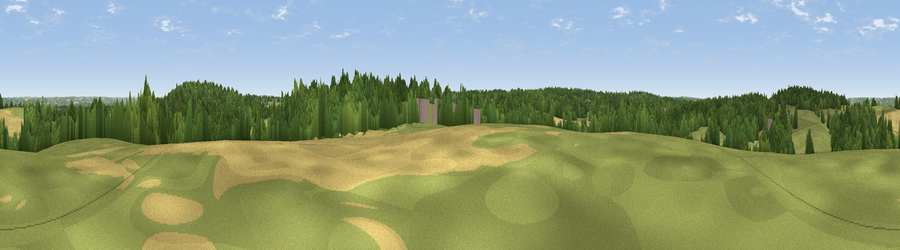

Viewpoint near Cranbrook
#32288 in England · top 41% of its area beats it · near CranbrookWhere it is
The exact computed spot (TQ 76775 38825). Click the marker for map links.
The view, rendered

A 360° render of this exact spot computed from the terrain model, tree cover and land cover — summer colours, afternoon light, calibrated against photographs of famous viewpoints. Real trees, hedges and buildings will differ in detail.
The panorama
Grey silhouette: terrain skyline in each direction (720 bearings, Earth curvature and refraction included). Dashed green: skyline with trees (+15 m) and buildings (+8 m) as obstacles. Blue strip: how far the ground is visible on each bearing.
Where the view opens
Wedge length = distance to the farthest visible ground on that bearing (vegetation-aware). Rings at 10, 25 and 50 km.
What fills the view
48% woodland · 40% grassland · 12% cropland · 1% built-up
Angular shares of the visible panorama (visual magnitude), not map area. Landscape diversity 0.44 (0–1 Shannon).
Key numbers
More beautiful places nearby
The staircase of upgrades: each row has a higher view potential than everything closer. Driving times are estimates from straight-line distance, calibrated against real road routing — check an actual route before setting out.
| Place | Direction | Drive | Score |
|---|---|---|---|
| Viewpoint near Sissinghurst | N · 1 km | ~2 min | 48.1 |
| Viewpoint near Goudhurst | NW · 2 km | ~5 min | 48.3 |
| Viewpoint near Goudhurst | NW · 3 km | ~8 min | 50.6 |
| Blackbush Wood Hill | SW · 4 km | ~9 min | 53.5 |
| Viewpoint near Brenchley | WNW · 9 km | ~18 min | 55.0 |
| Viewpoint near Boughton Malherbe | NE · 16 km | ~29 min | 56.1 |
| Birchetts Hill | NW · 16 km | ~29 min | 56.3 |
| Viewpoint near Hollingbourne | NNE · 18 km | ~32 min | 59.1 |
51.12144, 0.52457 · source: screening · position refined by local search. Computed location — check access rights before visiting.